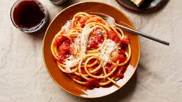

Tomato Pasta

Description
Adapted from Marcella Hazan.This is a wonderfully simple dish that is warming and delicious. There are only 4 ingredients and they come together to make a silky, delicate tomato sauce. Don't be scared of the butter.
Ingredients
- 2 cups tomatoes, in addition to their juices (ie. 28-ounce can of San Marzano whole peeled tomatoes).
- 5 tablespoons butter
- 1 onion, peeled and cut in half
- Salt
Steps
- Combine tomatoes in their juices, butter, and onion halves in a saucepan. Add a pinch or two of salt.
- Place over medium heat and bring to a simmer. Cook, uncovered, for about 45 minutes. Stir occasionally, mashing any large pieces of tomato with a spoon. Add salt as needed.
- Discard the onion before tossing the sauce with pasta. This recipe makes enough sauce for a pound of pasta.